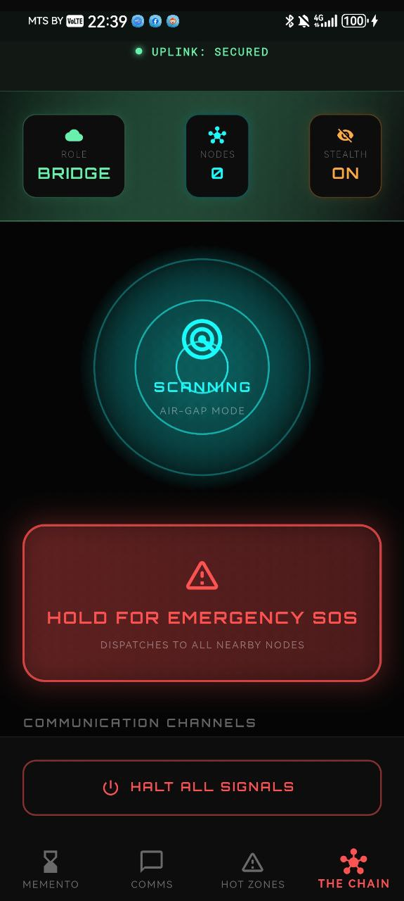
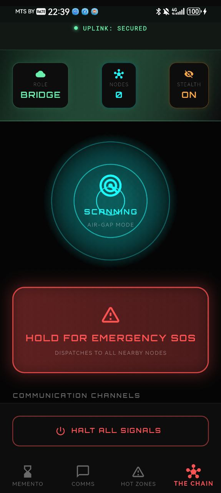
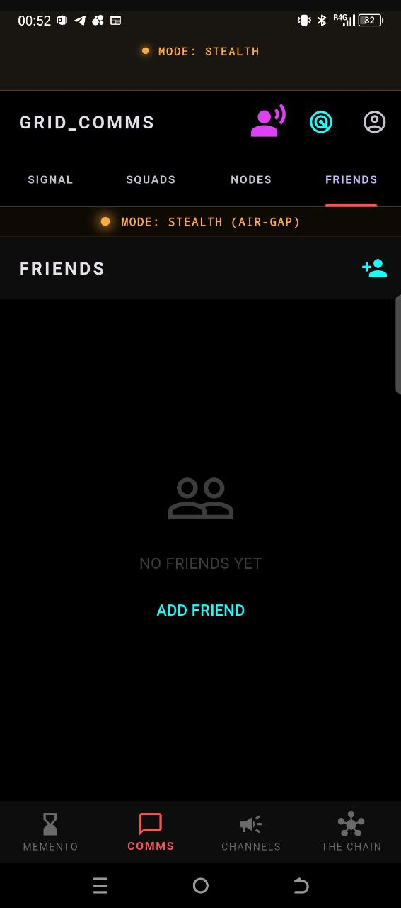
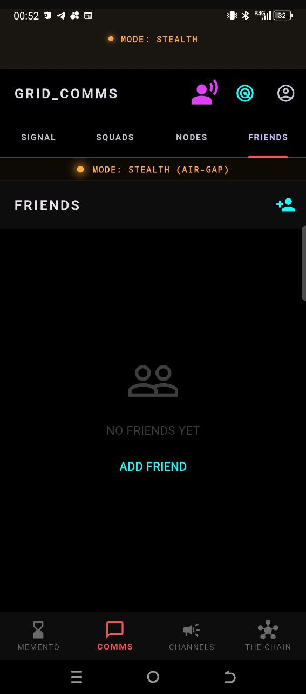

Metro & tunnels
Deep underground, in subways and service tunnels. Messages hop between passengers’ devices — no carrier needed.
Research Alpha · Open Source
Underground. In the woods. On a construction site. In a bunker. Where cell towers and Wi‑Fi don’t reach, phones can still talk to each other. Memento Mori is a shadow mesh: delay-tolerant, offline-first messaging over sound, Bluetooth, and Wi‑Fi Direct. No base stations. No central server. Just devices finding each other and relaying messages.
Memento Mori is a fault-tolerant, autonomous mesh designed to operate under total network degradation. It implements a shadow communication layer beneath the traditional Internet — for when the grid goes dark, the net is monitored, or you simply need to stay off the radar.
We are currently in alpha. The app is under active development and testing.
Feedback and device reports from the community are very welcome — open an issue or discussion on GitHub.
No cell coverage doesn’t mean no communication. These are the kinds of places Memento Mori is built for — where conventional networks fail and a phone-to-phone mesh can keep people connected.
Deep underground, in subways and service tunnels. Messages hop between passengers’ devices — no carrier needed.
Heavy machinery, rock, and depth block normal signal. Mesh keeps crews in touch for safety and coordination.
Scaffolding, basements, remote lots. Teams stay linked without relying on spotty or absent infrastructure.
Hiking, camping, search and rescue. Devices relay through the group; no towers in the middle of nowhere.
When the grid is down or you’re off the map. Local mesh keeps communication alive when the rest of the net is not.
Festivals, disasters, or simply places carriers never bothered to cover. If phones are nearby, the mesh can form.
Air-gapped discovery using ultrasonic BFSK (18–20 kHz). Works in radio silence or RF-monitored zones. No pairing required — devices find each other by sound.
Zero-connect topology: nodes broadcast gradient state in advertising packets. No heavy connections — just lightweight discovery and hop-count inference.
When a BLE link is verified, a high-bandwidth Wi-Fi group forms to flush the message queue. Biological burst-mode saves up to 90% battery.
Fully functional offline identity (Ed25519) in SQLite. When the internet returns, your ghost merges atomically with a persistent ID — no history loss.
 

 

Android API 26+ recommended. Emulators are limited due to Bluetooth and Wi-Fi Direct.
git clone https://github.com/pslergy/memento-mori-app.git
cd memento-mori-app
flutter pub get
flutter run --release⚠️ Research preview (alpha). Protocol and schema may change. Not for mission-critical use without validation.
Memento Mori is an independent open-source research project. Your support helps accelerate development and keep resilient offline communication alive.
Donate (crypto — no middleman):
bc1q7308mnt0yarq5s9ngvjvurp3juggn9jy9yh53p
0xd642d38532FE3c2B5Fa0547556fff2d9388621E6
0xd642d38532FE3c2B5Fa0547556fff2d9388621E6
Click an address to copy. Also available in the app under Support / Donate.
GitHub Sponsors — application submitted; link will be active once approved. github.com/sponsors/pslergy